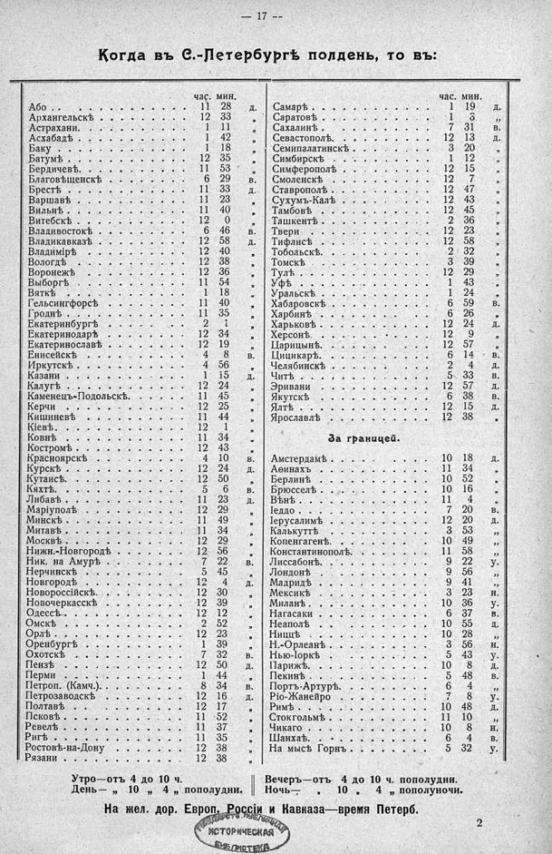

Лист источника 63
Скан

Распознанный текст
— 17 —
Когда въ С.-Петербургѣ полдень, то въ:
час. мин.
Або . . . . . . . . . . . . . 11 28 д.
Архангельскѣ . . . . . . . . . . . 12 33 „
Астрахани. . . . . . . . . . . . 1 11 „
Асхабадѣ . . . . . . . . . . . . 1 42 „
Баку . . . . . . . . . . . . . 1 18 „
Батумѣ . . . . . . . . . . . . . 12 35 „
Бердичевѣ. . . . . . . . . . . . 11 53 „
Благовѣщенскѣ . . . . . . . . . . 6 29 в.
Брестѣ . . . . . . . . . . . . 11 33 д.
Варшавѣ . . . . . . . . . . . . 11 23 „
Вильнѣ . . . . . . . . . . . . 11 40 „
Витебскѣ . . . . . . . . . . . . 12 0 „
Владивостокѣ . . . . . . . . . . . 6 46 в.
Владикавказѣ . . . . . . . . . . 12 58 д.
Владимірѣ . . . . . . . . . . . . 12 40 „
Вологдѣ . . . . . . . . . . . . 12 38 „
Воронежѣ . . . . . . . . . . . 12 36 „
Выборгѣ . . . . . . . . . . . . 11 54 „
Вяткѣ . . . . . . . . . . . . 1 18 „
Гельсингфорсѣ . . . . . . . . . . 11 40 „
Гроднѣ . . . . . . . . . . . . 11 35 „
Екатеринбургѣ . . . . . . . . . . 2 1 „
Екатеринодарѣ . . . . . . . . . . 12 34 „
Екатеринославѣ . . . . . . . . . . 12 19 „
Енисейскѣ . . . . . . . . . . . . 4 8 в.
Иркутскѣ . . . . . . . . . . . . 4 56 „
Казани . . . . . . . . . . . . . 1 15 д.
Калугѣ . . . . . . . . . . . . . 12 24 „
Каменецъ-Подольскѣ. . . . . . . . 11 45 „
Керчи . . . . . . . . . . . . 12 25 „
Кишиневѣ . . . . . . . . . . . 11 44 „
Кіевѣ. . . . . . . . . . . . . 12 1 „
Ковнѣ . . . . . . . . . . . . . 11 34 „
Костромѣ . . . . . . . . . . . . 12 43 „
Красноярскѣ . . . . . . . . . . . 4 10 в.
Курскѣ . . . . . . . . . . . . 12 24 д.
Кутаисѣ. . . . . . . . . . . . . 12 50 „
Кяхтѣ. . . . . . . . . . . . . 5 6 в.
Либавѣ . . . . . . . . . . . . . 11 23 д.
Маріуполѣ . . . . . . . . . . . . 12 29 „
Минскѣ . . . . . . . . . . . . . 11 49 „
Митавѣ . . . . . . . . . . . . . 11 34 „
Москвѣ . . . . . . . . . . . . . 12 29 „
Нижн.-Новгородѣ . . . . . . . . . 12 56 „
Ник. на Амурѣ . . . . . . . . . . 7 22 в.
Нерчинскѣ . . . . . . . . . . . 5 45 „
Новгородѣ . . . . . . . . . . . 12 4 д.
Новороссійскѣ. . . . . . . . . . . 12 30 „
Новочеркасскѣ . . . . . . . . . . 12 39 „
Одессѣ. . . . . . . . . . . . . 12 12 „
Омскѣ . . . . . . . . . . . . . 2 52 „
Орлѣ . . . . . . . . . . . . . 12 23 „
Оренбургѣ . . . . . . . . . . . 1 39 „
Охотскѣ . . . . . . . . . . . . 7 32 в.
Пензѣ . . . . . . . . . . . . . 12 50 д.
Перми . . . . . . . . . . . . . 1 44 „
Петроп. (Камч.) . . . . . . . . . . 8 34 в.
Петрозаводскѣ . . . . . . . . . . 12 16 д.
Полтавѣ . . . . . . . . . . . . 12 17 „
Псковѣ . . . . . . . . . . . . . 11 52 „
Ревелѣ . . . . . . . . . . . . . 11 37 „
Ригѣ . . . . . . . . . . . . . 11 35 „
Ростовѣ-на-Дону . . . . . . . . . 12 38 „
Рязани . . . . . . . . . . . . . 12 38 „
час. мин.
Самарѣ . . . . . . . . . . . . . 1 19 д.
Саратовѣ . . . . . . . . . . . . 1 3 „
Сахалинѣ . . . . . . . . . . . . 7 31 в.
Севастополѣ. . . . . . . . . . . 12 13 д.
Семипалатинскѣ . . . . . . . . . 3 20 „
Симбирскѣ . . . . . . . . . . . 1 12 „
Симферополѣ . . . . . . . . . . . 12 15 „
Смоленскѣ . . . . . . . . . . . 12 7 „
Ставрополѣ . . . . . . . . . . . 12 47 „
Сухумъ-Калѣ . . . . . . . . . . 12 43 „
Тамбовѣ . . . . . . . . . . . . 12 45 „
Ташкентѣ . . . . . . . . . . . . 2 36 „
Твери . . . . . . . . . . . . . 12 23 „
Тифлисѣ . . . . . . . . . . . . 12 58 „
Тобольскѣ. . . . . . . . . . . . 2 32 „
Томскѣ . . . . . . . . . . . . 3 39 „
Тулѣ . . . . . . . . . . . . . 12 29 „
Уфѣ . . . . . . . . . . . . . 1 43 „
Уральскѣ . . . . . . . . . . . . 1 24 „
Хабаровскѣ . . . . . . . . . . . 6 59 в.
Харбинѣ . . . . . . . . . . . . 6 26 „
Харьковѣ . . . . . . . . . . . . 12 24 д.
Херсонѣ. . . . . . . . . . . . . 12 9 „
Царицынѣ. . . . . . . . . . . . 12 57 „
Цицикарѣ. . . . . . . . . . . . 6 14 в.
Челябинскѣ . . . . . . . . . . . 2 4 д.
Читѣ . . . . . . . . . . . . . 5 33 в.
Эривани . . . . . . . . . . . . 12 57 д.
Якутскѣ . . . . . . . . . . . . 6 38 в.
Ялтѣ . . . . . . . . . . . . . 12 15 д.
Ярославлѣ . . . . . . . . . . . . 12 38 „
За границей.
Амстердамѣ . . . . . . . . . . . 10 18 д.
Аѳинахъ . . . . . . . . . . . . 11 34 „
Берлинѣ . . . . . . . . . . . . 10 52 „
Брюсселѣ . . . . . . . . . . . . 10 16 „
Вѣнѣ . . . . . . . . . . . . . 11 4 „
Іеддо . . . . . . . . . . . . . 7 20 в.
Іерусалимѣ . . . . . . . . . . . 12 20 д.
Калькуттѣ . . . . . . . . . . . 3 53 „
Копенгагенѣ. . . . . . . . . . . 10 49 „
Константинополѣ. . . . . . . . . . 11 58 „
Лиссабонѣ. . . . . . . . . . . . 9 22 у.
Лондонѣ . . . . . . . . . . . . 9 56 „
Мадридѣ . . . . . . . . . . . . 9 41 „
Мексикѣ . . . . . . . . . . . . 3 23 н.
Миланѣ . . . . . . . . . . . . . 10 36 у.
Нагасаки . . . . . . . . . . . 6 37 в.
Неаполѣ . . . . . . . . . . . . 10 55 д.
Ниццѣ . . . . . . . . . . . . . 10 28 „
Н.-Орлеанѣ . . . . . . . . . . . 3 56 н.
Нью-Іоркѣ . . . . . . . . . . . 5 43 у.
Парижѣ. . . . . . . . . . . . . 10 8 д.
Пекинѣ . . . . . . . . . . . . 5 48 в.
Портъ-Артурѣ. . . . . . . . . . . 6 4 „
Ріо-Жанейро . . . . . . . . . . 7 8 у.
Римѣ . . . . . . . . . . . . . 10 48 д.
Стокгольмѣ . . . . . . . . . . . 11 10 „
Чикаго . . . . . . . . . . . . 10 8 н.
Шанхаѣ. . . . . . . . . . . . . 6 4 в.
На мысѣ Горнъ . . . . . . . . . . 5 32 у.
Утро—отъ 4 до 10 ч. Вечеръ—отъ 4 до 10 ч. пополудни.
День— „ 10 „ 4 „ пополудни. Ночь— „ 10 „ 4 „ пополуночи.
На жел. дор. Европ. Россіи и Кавказа—время Петерб.
2